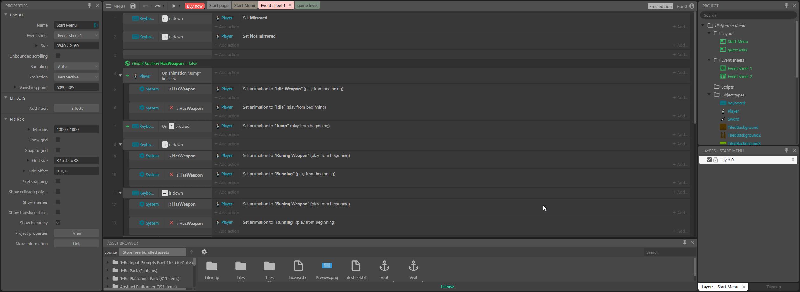

Degree Boards
Statement of Intent & Program Objectives
UAT General Education Objective 5 ("Student as Community Member") and B.S. Game Design / Level Design board evaluation deliverables.
Statement of Intent (Community Statement)
Based on what I have done overtime, Ive had many goals related to Game Design and Goals for creating. The first topic is Community Identification and sub-communities. When I applied to Fear Element Studio's, I portrayed myself as a Game designer, specifically a Level Designer. I framed myself in this way by showing that I had the skills to do the role I applied for by showing off a portfolio of my 3d level design work, 3d modeling work, and game design perspective works to show my thinking process behind game design processes. It worked out very well and I was given the role after a proper interview. I was professional and straightforward as well as truthful to my skills and not giving myself more credit than what I warranted. I made sure to offer all skills related to level design when applying, making my portfolio, my resume, and during the interview. That is how I went about community identification and sub-community goals.
I have engaged with many different communities in the game design space and do my best to understand their process in the creation of games. Good examples of this is playtesting for a few games. I have tested ARC Raiders, Casualties unknown, Cleanfall, Deadlock, and more in closed beta testing for proper feedback. I have interacted with all of the communities behind these games, getting in contact with developers, giving feedback, talking with fellow play testers, and have helped games do better for themselves. For projects that Ive worked on myself, the main two projects would be my internship project from Fear Element Studio, and my current project being a game production studio factory game project. Both projects have been amazing to work on and both projects Ive done different things. For the Fear Element studio project, I was a proper level designer, paper mapping, and rough layout mapping in UE5. As for the Factory game in the game production studio, I am currently dealing with handling in depth game design document changes and decisions.
My Digital Citizenship and values are very strict and have always been strict. When it comes to things like assets to buy to use, I will always pay for it and never pirate content that someone has spent time making, as it hurts them a lot for their business despite the effort they put into their work. I also will never use AI for things like art, game design thinking, game design documentation, sound design, UI, and many other things. AI is very powerful and should be used very responsibly, mainly used to help with understanding documentation of game engines and other things related to that subject. When I use assets that someone else made, I ensure that I reserve all rights to the proper creator and ensure that it is very visible before the consumer sees or interacts with the content. I also strive to create assets of my own and doing my best to give assets out to communities who want them. That is my Digital Citizenship values.
Objective 1: Level Design & Spatial Composition
Demonstrate the ability to design engaging, narrative-driven 3D and 2D environments and modular layouts.
 Project A • Blender & Unity (SIP)
Project A • Blender & Unity (SIP)
STS: Modular Tower Bases & Sockets
Designed and modeled scaling L1, L2, and L3 multi-slot tower bases in Blender to support modular tower defense socket mechanics.
 Project B • Blender & Maya
Project B • Blender & Maya
3D Weapons, Props & Environment Assets
Modeled and rigged hard-surface assets (Lewis Gun) and modular props in Blender and Maya for game environments.
Objective 2: Interactive Systems & Mechanics
Design, script, and implement working gameplay mechanics and player interactions.
 Project A • Unreal Engine 5
Project A • Unreal Engine 5
Interactive Blueprint Logic & Object Casting
Implemented modular character interaction loops, line traces, cast validation, and dynamic UI state triggers in UE5 Blueprints.

Project B • Construct 3